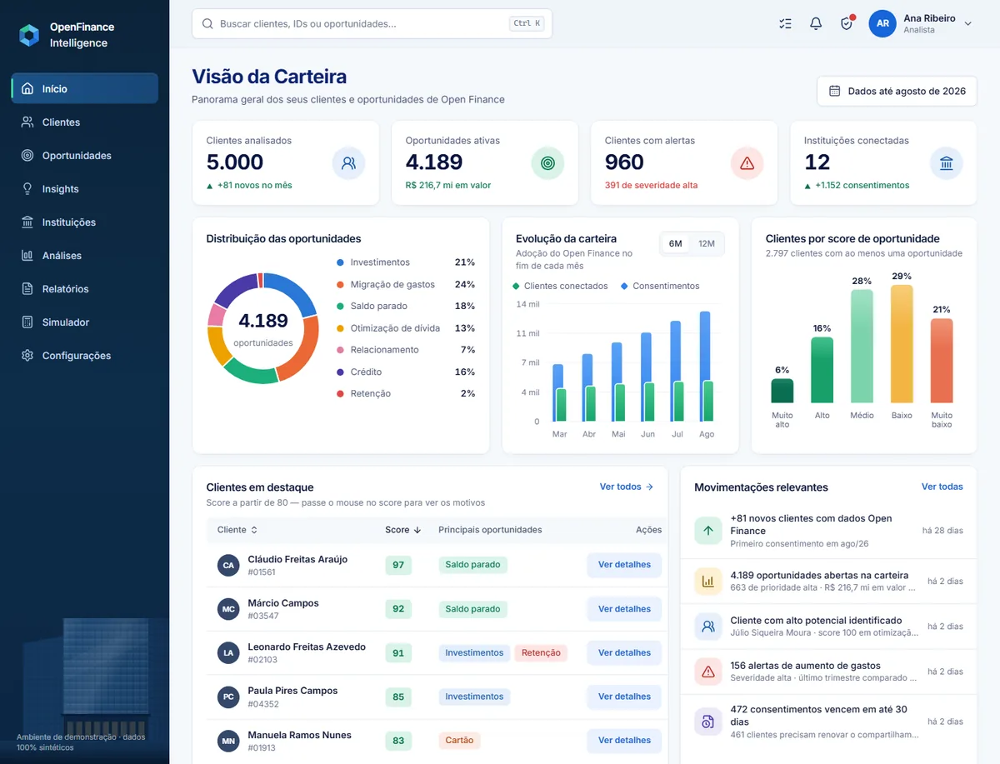

Full stack · Dados · Machine learning
💳 OpenFinance Intelligence
Plataforma para analistas de banco que junta os dados de Open Finance de cada cliente (contas, cartões, investimentos e empréstimos em várias instituições) e aponta oportunidades comerciais, sempre com a explicação de cada número.
- 5 mil clientes sintéticos e cerca de 500 mil transações, com ETL que gera umas 80 features por cliente
- Motor com 7 regras de oportunidade: cada ponto do score é rastreável até um dado do cliente
- Segmentação com KMeans e detecção de anomalias com Isolation Forest
- IA que só explica fatos já calculados, sem receber nome nem ID do cliente, com LGPD, perfis de acesso e auditoria
- 37 testes no backend e CI no GitHub Actions em SQLite e PostgreSQL